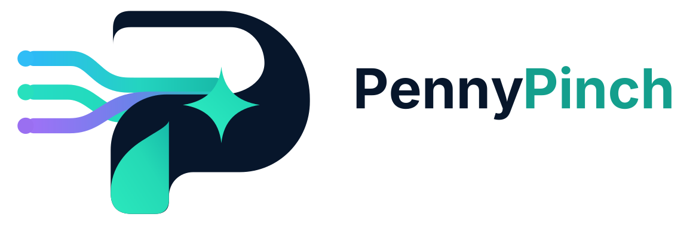

PennyPinch
GitHub yayını: . Geliştirme kaydı: .

AI kodlama araçlarının bağlamını yerel olarak sıkıştıran Headroom motorunu, istemci bağlantılarını yönetebildiğim ve giriş token ölçümlerini takip edebildiğim açık kaynak bir masaüstü uygulamasına taşıdım. Desteklenen bağlantılar Codex ve Claude Code’u kapsıyor; OpenCode için de bağlantı akışları var.
Masaüstü arayüzünü hazırladım; istemci bağlantılarıyla kullanım kayıtlarını bir araya getirdim. Sıkıştırma motoru olarak Headroom projesini kullanıyorum. Windows önizleme sürümü yayımlandı.
Her ölçüm, kullanılan isteğin ve sayacın bilgisiyle raporlanıyor. Test kapsamları proje deposunda kayıtlı. Sonuçları incelemek için doğrudan bu kayıtlara ulaşılabiliyor.
Masaüstü: Tauri 2 ve Rust. Arayüz: React / TypeScript. Sıkıştırma motoru: Headroom.